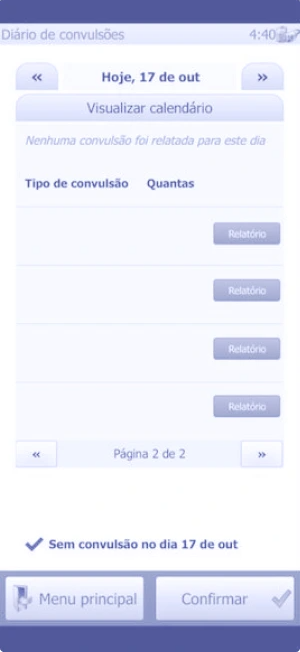
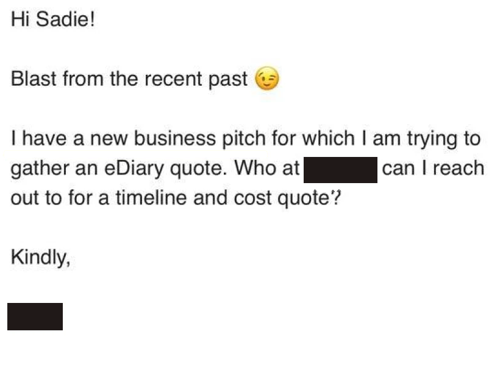

Client communication · Mobile app
Details generalized for confidentialitySeizure & medication app

Outcome
A showstopper bug just before user acceptance testing (UAT) ended up strengthening the client relationship. The app launched successfully, equipping caregivers to log seizures and medication on their phones instead of paper. Months later, as the client grew their business, they came back with a new bid request. Internal teams changed their specification checks so this class of problem wouldn’t recur.
Problem
The app wouldn’t load and we didn’t know why. The bug was discovered before UAT. Not delivering on time would jeopardize the client’s company, including their financial backing. A failed launch could shutter them. The stakes were high for everyone, and I had to keep the client’s confidence while our engineers searched for a cause.
My role
I was the client’s advocate inside our team and our team’s voice to the client. I managed the relationship, problem-solved with internal and external stakeholders, and made sure deliverables matched needs. R&D and delivery engineers identified the issue, checked specifications against technical limitations, and reviewed code. The localization team handled translations.
Constraints
Four constraints limited what I could do for the client.
| Constraint | What it meant |
|---|---|
| We could not offer a cause, a fix, or a timeline | Reassurance had to come from how we communicated, not from certainty |
| The client’s frustration was legitimate | Their concerns had to be heard and acknowledged, not dismissed |
| Short-term financing | A delay could threaten the client’s survival |
| Our team was distributed across Europe and the US | Slower when the situation was ambiguous |
Guiding principle
Actions under fire show you’re on the same team.
I knew my communication with the client could either sustain or break our collaboration when under pressure. I told the client the moment the problem was confirmed, with nothing yet to offer but a commitment to fixing it. That decision is what strengthened the relationship.
I listened to and acknowledged their frustration. I anticipated their questions so they weren’t left waiting for responses. I shared what we knew and what we didn’t yet know. My message was clear: “I recognize this is not a satisfactory answer. Resolving the problem is our highest priority.”
I braced for the client to explode. Fortunately, their reply was a relief: “We do find your response satisfactory and appreciate your transparency. These things happen.” Because the reaction was reasonable, everyone could concentrate on the solution.
After several days of investigation, R&D flagged an OS incompatibility. The cause was embarrassing, but the client was still with us.


(view full size)Learning
I would facilitate internal communication more intentionally. With the team spread across time zones, meeting in the same room wasn’t an option. Messaging back-and-forth works well for quick answers but can slow investigation when the situation is more ambiguous. I’ve since found that brief daily calls help to align the team and sustain momentum when solving a time-sensitive problem.